Redesigning Mobile Banking for 3.5 Million Users
A full UX overhaul of Axis Bank's mobile app — simplifying navigation, modernising core flows, and bringing banking closer to the way people actually live and pay.
Problem Space
Mobile banking in India grew faster than the apps that powered it. By 2016, Axis Mobile had more features than any user could find — and a navigation system that made discovery nearly impossible.
With low data tariffs and the introduction of UPI, digital payments became the norm in India through the mid-2010s. Mobile banking's most frequent use case was checking account balance — but the opportunity to drive fund transfers, bill payments, credit card payments, and product discovery was significant and largely unrealised.
Axis Bank is India's third largest private bank, with 5,000+ branches and 35 million users. Their mobile app, Axis Mobile, had grown feature-by-feature without a coherent UX strategy — resulting in a product that was technically capable but practically overwhelming.
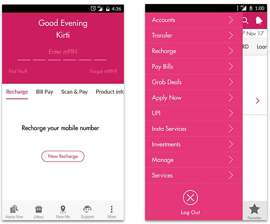
Existing Axis Mobile — pre-redesign screens
Navigation — 90+ menu items with no clear grouping. Navigation was split across pre-login screens, a side menu, and post-login flows. Users had no consistent mental model of where anything lived.
Security perception — Account balance was visible without mPIN entry on the pre-login screen. Users perceived this as a security risk, reducing trust in the app overall.
Login friction — Quick login was available but users expected a visible login button on the pre-login screen. The entry point wasn't where they looked for it.
The brief from Axis Bank executives was clear: make the app feel modern — comparable in quality to the payments and delivery apps users were already comfortable with. The UX team's job was to translate that ambition into a structure that worked for real banking tasks.
Navigation & Information Architecture
90+ items is not a navigation problem — it is a categorisation problem. The work was deciding what belonged together, and what belonged at the top level.
We audited every feature in the existing app and grouped them by user intent — not by the bank's internal product categories. Pay, Transfer, Manage, Apply, Support — five top-level buckets that reflected how users thought about their banking tasks, not how the bank's product teams were organised.
The scrollable side menu was eliminated. Pre-login and post-login navigation were given distinct but consistent patterns, with login made the primary visible action on the entry screen.
Account balance visibility before mPIN was removed. Instead, we designed a balance reveal interaction — users could choose to see their balance after authentication. This addressed the perceived security gap while giving users who wanted quick access a controlled path to it.
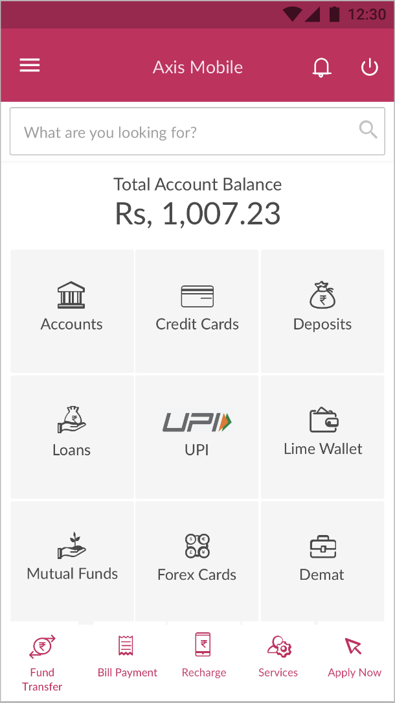
Redesigned home — clear entry, grouped navigation
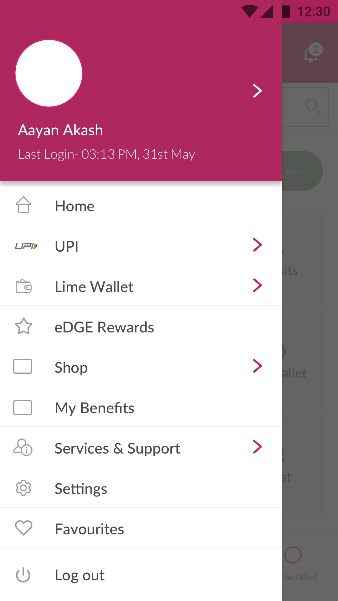
Side menu — reorganised by user intent
Core Flows
Fund transfer and bill payment were the highest-frequency use cases after balance check. They also had the highest abandonment. The redesign made them the fastest paths in the app.
The existing transfer flow required users to add a beneficiary before initiating a transfer — a mandatory step even for frequent payees. We restructured it around the most common scenario: search for someone already known, enter amount, confirm. Beneficiary addition became a secondary path, not a gate.
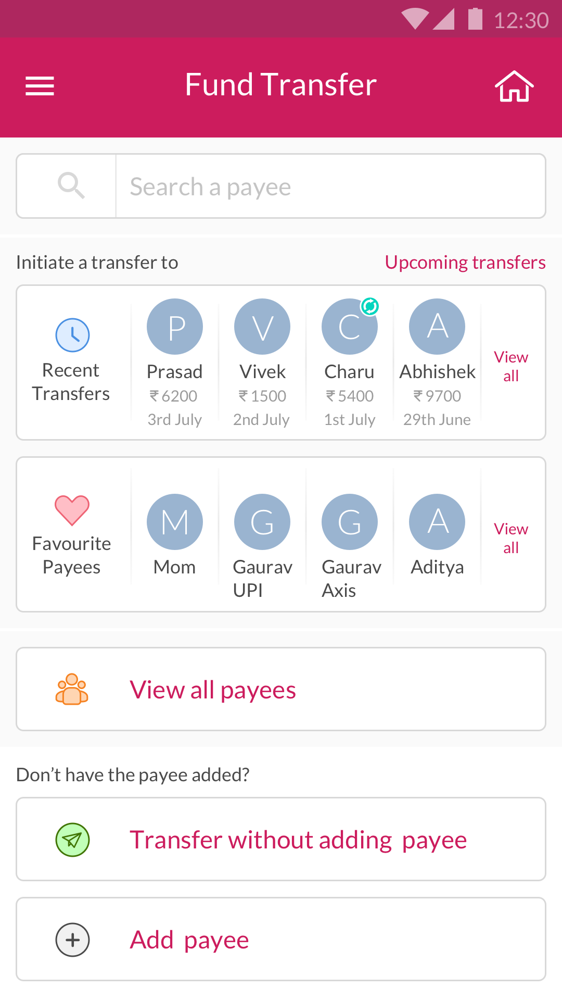
Payee search — find by name or account
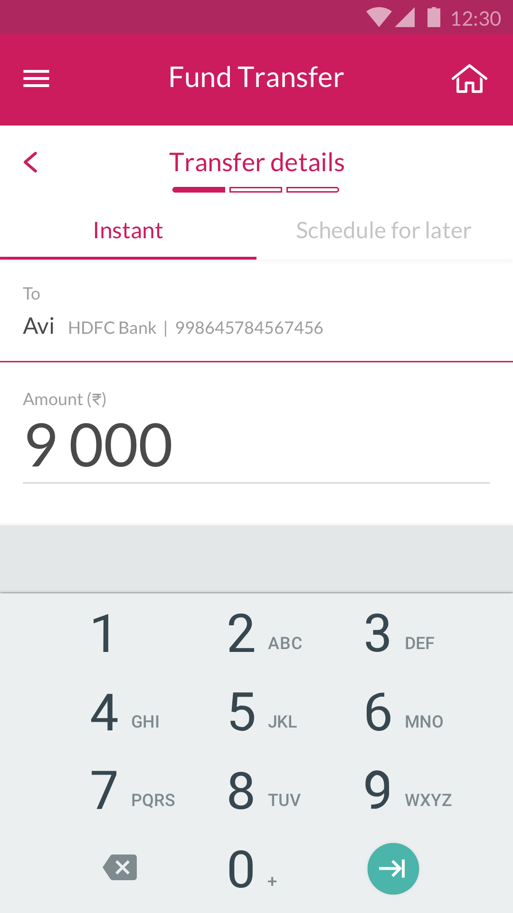
Amount entry
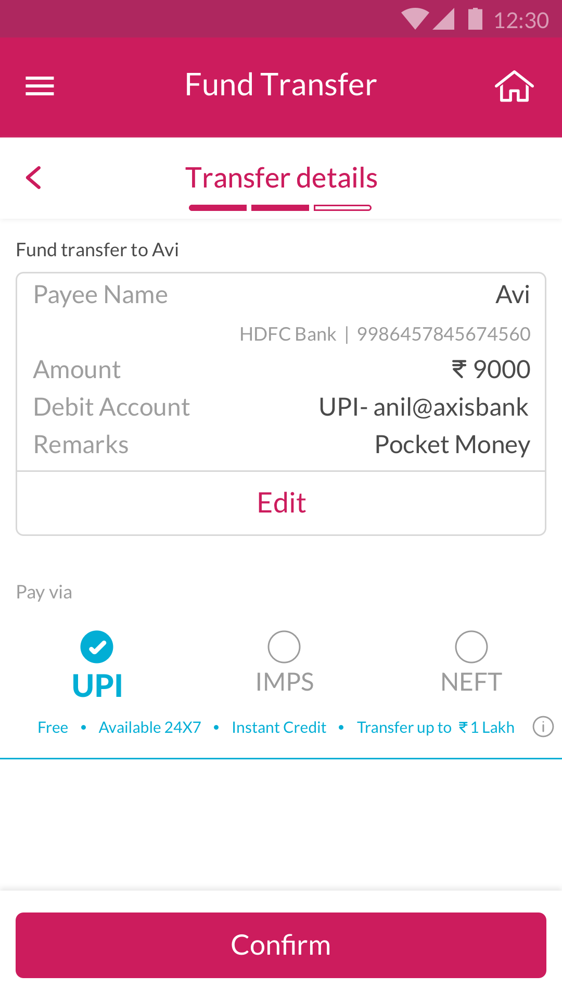
Review before confirming
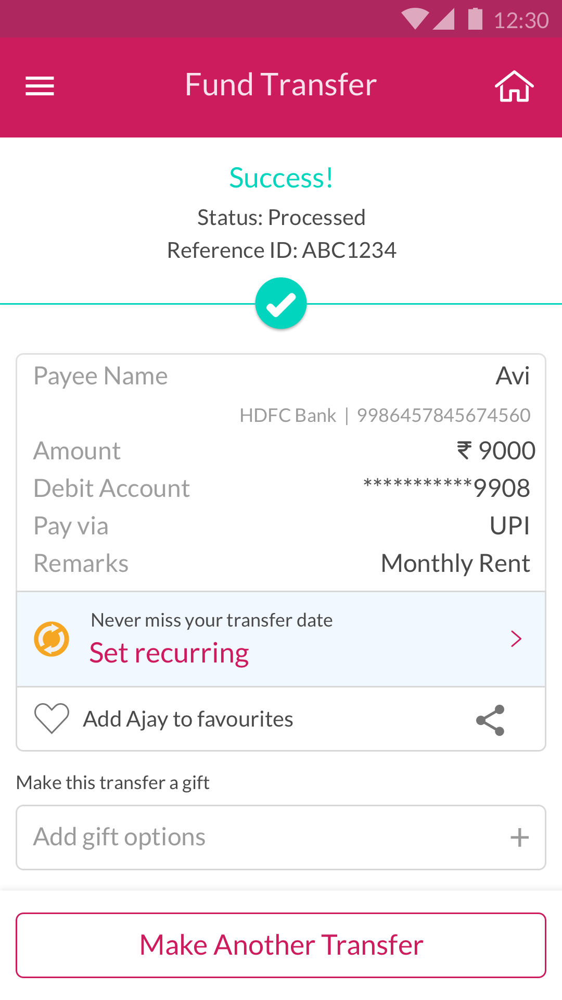
Transfer confirmed
Bill payment was brought into a unified pay surface — utility bills, credit card payments, and loan repayments accessible from one entry point. We also introduced in-app flows for applying for loans and credit cards, previously requiring branch visits or separate web journeys.
Before settling on the final visual direction, the team explored several design languages — testing how trust, modernity, and clarity could be expressed differently within the Axis Bank brand. The final direction drew from the visual confidence of consumer fintech apps while maintaining the formality expected of a major bank.
Design language explorations — early direction-setting
Account Analytics
Users checked their balance. They almost never looked at statements. We explored whether surfacing spending patterns inline could make account data feel useful rather than archival.
Beyond the core transactional flows, we explored how account statements could become an active financial tool. Rather than a flat list of transactions, we prototyped spending category breakdowns, monthly comparisons, and trend visualisations — giving users a clearer picture of where their money was going without leaving the app.
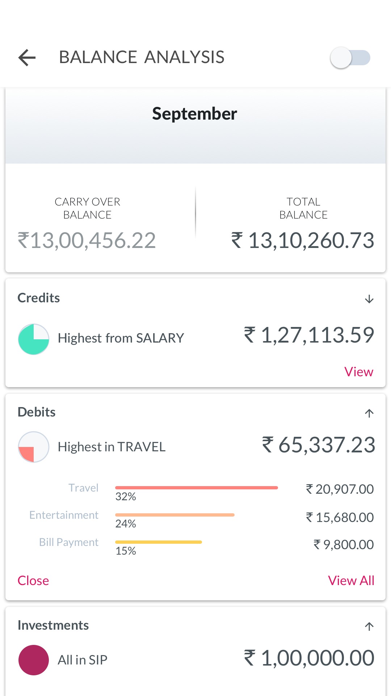
Spending breakdown by category
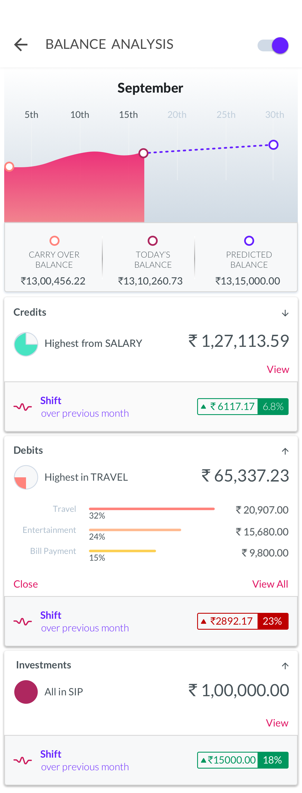
Monthly spending trends
Voice UI — Alexa Skill
Alongside the mobile redesign, we explored what banking via voice could look like — designing Axis Bank as an Alexa skill for users who wanted to check balances, recent transactions, or payment due dates without picking up their phone.
We mapped the most common banking intents to voice interactions — balance inquiry, last transaction, upcoming bill due dates, and fund transfer initiation. Each flow was designed around the constraints of voice: no visual confirmation, security through voice PIN, and short response phrasing that worked spoken aloud.
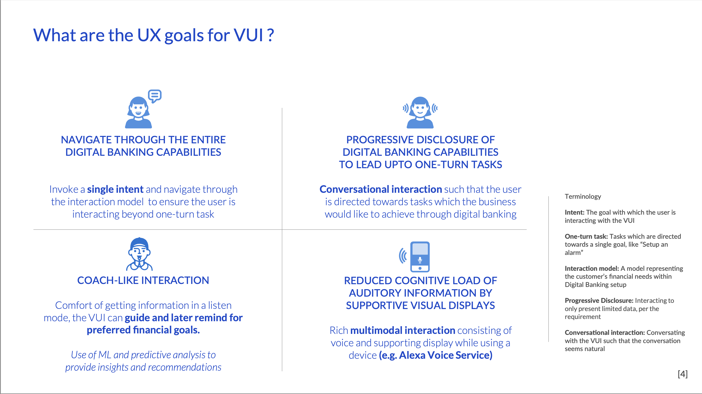
Balance inquiry
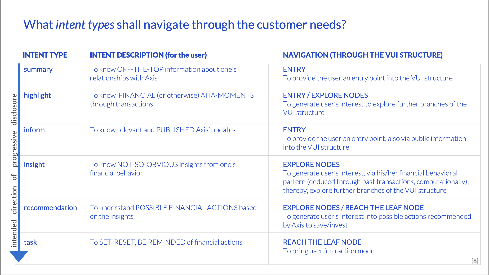
Last transaction
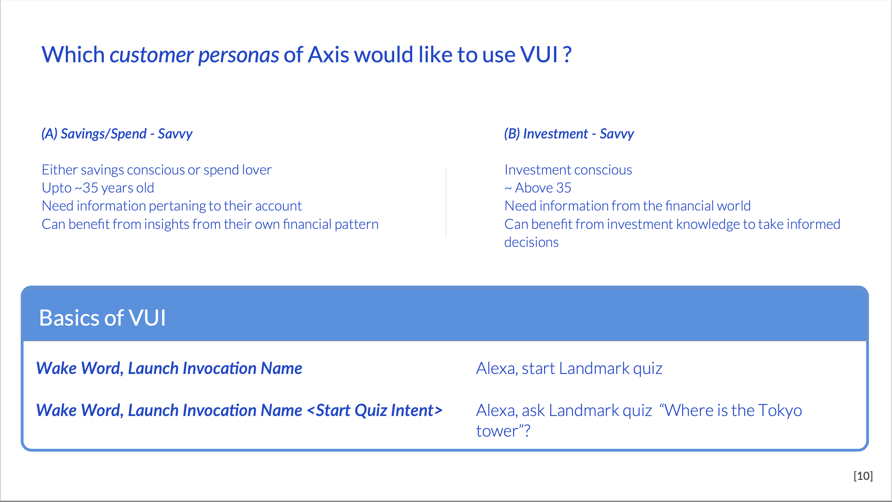
Bill due dates
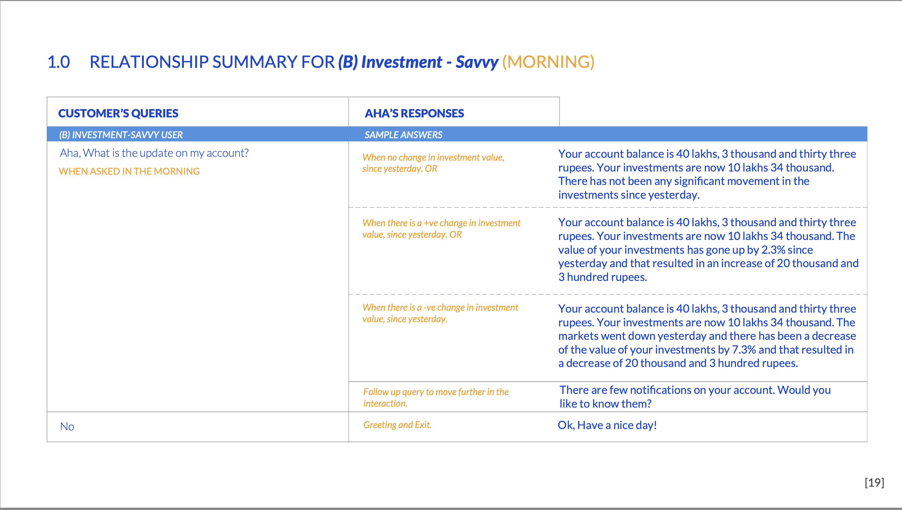
Fund transfer initiation
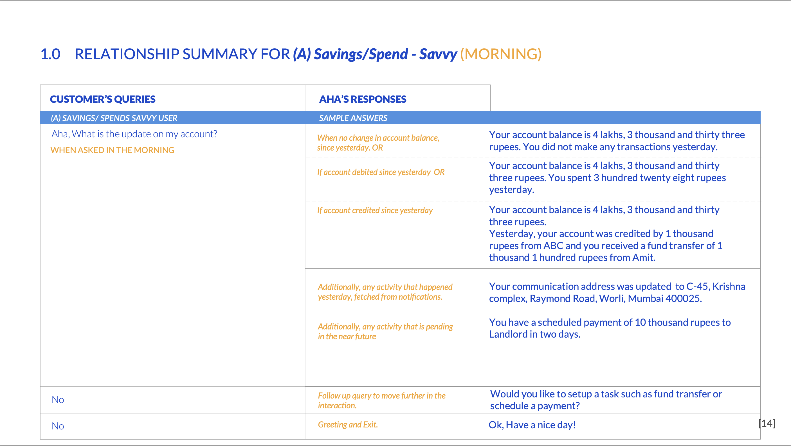
Confirmation flow
Research & Process
The work started with three conversations: what the bank needed to achieve, what users struggled with, and what principles would hold the decisions together.
We spoke with Axis Bank executives to understand business goals — increasing product sales and app engagement were the primary drivers. We then spoke with a cross-section of mobile banking users to understand usability pain points. The gap between what the bank wanted the app to do and what users actually did inside it was the design problem.
Security and Trust — Every interaction that touched money needed to feel deliberately safe. Not paranoid, but controlled.
Control and Transparency — Users needed to see what was happening and why. No surprises in a banking app.
Modern and Progressive — The app needed to feel as confident and fluid as the consumer apps users were already comfortable with.
I led a team of three UX and visual designers, working in close collaboration with Axis Bank's digital product and engineering teams. The scope covered the full Axis Mobile app — every major flow was redesigned — as well as the separate Axis ASAP zero-balance account product.
Outcomes
The redesigned app improved product discovery and in-app sales across funds transfer, bill payment, credit card management, account benefits, and complaint tracking. Every major flow was redesigned end-to-end.
We also designed the experience for Axis ASAP — a zero-balance savings account opened entirely through mobile. It reached 5 lakh downloads within months of launch.
"Your team brings a lot of uniqueness to the product through intricate and micro-interactions which other teams cannot conceive." — MD, Digital Banking, Axis Bank
Two years of sustained collaboration between UX, product, and engineering across Axis Bank's digital team. The hardest part was simplifying without losing capability — 90+ features had to become navigable without being hidden.
For platform-scale design work, see
← Case Study A — From Design Debt to Design System